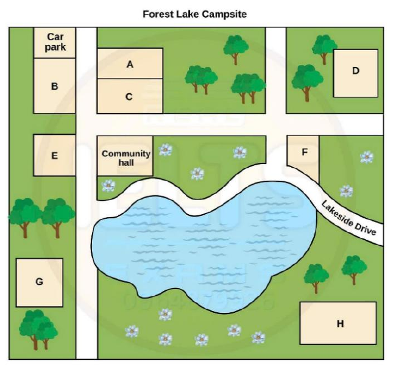

Phiếu trả lời Listening
Bấm số câu để nhảy tới câu đó. Bài làm được tự lưu trên máy này. Thời gian thi thật: khoảng 30 phút.
PART 1 Questions 1–10
Complete the notes below.
Write ONE WORD AND/OR A NUMBER for each answer.
Library services Example: Area of living: in the west of Perthon Best option – Minack Library Located in Street, next to the Saturdays: open until p.m. Children’s activities
Adult activities
Services
Library shop sells
|
📜 Lời thoại Part 1
Section 1. You will hear a telephone conversation between a man who works for a library service and a woman who wants to join a library. First, you have some time to look at questions 1 to 5 on page 2. You will see that there is an example that has been done for you. On this occasion only, the conversation relating to this will be played first.
Good morning, library services. Oh, good morning. My family and I have recently moved to the area and we'd like to find where our nearest library is.
We don't have a car. Right, so whereabouts are you? In Perton, in the west. Fine, so I'll just get the details on screen for you.
The woman is asking about libraries in the west of the area, so west has been written in the space. Now we shall begin. You should answer the questions as you listen because you will not hear the recording a second time.
Listen carefully and answer questions 1 to 5. Good morning, library services. Oh, good morning. My family and I have recently moved to the area and we'd like to find where our nearest library is.
We don't have a car. Right, so whereabouts are you? In Perton, in the west. Fine, so I'll just get the details on screen for you.
OK, your nearest one is the Minack Library. Minack? Yes, in Skellarn Street. Can you spell that? It's S-K-E-L-L-A-R-N Street.
Got that. It's very easy to find because it's beside a park. Oh, I think I know that area.
There's a sports centre near there, isn't there? I don't know of one. Oh, I'm probably mistaken. Anyway, it's probably a bit far for us to walk from home.
Are there any buses? Yes, it's well-served by public transport. There's a stop about five minutes' walk away. Oh, right.
And when does the library open? We'll most often want to come at the weekend. I'm afraid it's not open on Sunday. Saturday? Opens at 9 o'clock, closes at 4.30.
We shut at 5 on weekdays.
That's fine. Now, I've got two kids, 14 and 9, and I wondered whether you have any special activities for them. In our last place, we had an art club.
Well, the library does run a drama club, but that would only be suitable for your younger child. It's open for 5 to 13-year-olds. A pity it's not open to both of them.
Have you anything they could both go to? Well, there's no reading club that would suit them both. Oh, but there's a singing club that's held every second Saturday afternoon for children of all ages up to 16. Excellent.
Before you hear the rest of the conversation, you have some time to look at questions 6 to 10 on page 2. Now listen and answer questions 6 to 10. Now, because we're new to the area, I'm also wanting to get involved in local activities. Well, Minack does some sessions for adults as well.
There's a book of the month club. That's good. And I know that about once every 12 months, they have a session where you can meet artists, you know, from the local area.
How interesting. Well, that sounds like a full programme. Now, while I'm on the phone, can I check what the facilities are? Can you take out CDs? Not CDs, I'm afraid, but films, yes.
Right. I'll make a note of that. Anything else you need to know? Oh, yes.
We have 10 computers and we also stock several magazines, including business, healthcare and hobbies. Same as my last place. And there is a new drop-off facility where you can post any item through the door if it's after hours.
All you have to do is attach a note to it with the number on your card clearly written. That sounds good. And we do have a small shop on the premises where we sell postcards.
We don't have many, but it's a popular service. Oh, that's a good idea. They're very popular.
We also have an impressive range of maps of the surrounding area for sale. Well, it sounds like you've got... That is the end of section one. You now have half a minute to check your answers.
PART 2 Questions 11–20
Questions 11–16
Label the map below.
Choose the correct letter, A–H, next to Questions 11–16.

11 Toilet block
12 Shower block
13 Tent site
14 Cabins
15 Barbecue area
16 Bike trail
Questions 17 and 18
Choose TWO letters, A–E.
17–18 Which TWO items is it recommended that campers bring?
Questions 19 and 20
Choose TWO letters, A–E.
19–20 Which does the organiser suggest are the TWO most popular concert items?
📜 Lời thoại Part 2
Section two. You will hear the organiser of a family camp talking to a group of people who will be staying at a campsite. First, you have some time to look at questions 11 to 16 on page three.
Now listen carefully and answer questions 11 to 16. Hello, everyone. And welcome to this orientation session prior to our camp next week.
Thank you for coming along to find out what you and your children will be doing on this year's camp. To start off with, let's tell you a bit about the campsite itself so that you'll be able to find your way around once you get there. Firstly, we'll be arriving by bus into the car park, which if you look at the plan you have in front of you, you'll see at the top of the picture on the left-hand side.
Now, if you cross the road from the car park, the first building you'll come to is the toilet block. It's been recently upgraded, so it's very nice and clean in there now with plenty of facilities. And built onto that, so this is across the road from the community hall, is the new shower block.
The hot water does run out occasionally, but usually there's enough to cope with a group your size. If you now move to the bottom left of your map, among the pine trees, there is a special flat site set up for pitching tents with power points and outdoor taps for water. Now, let's go back and move along the top of your map.
There's another area of pine forest, and then over on the far right-hand side, there's a block of small cabins. Note that this is different from the main accommodation block, which doesn't appear on this map, but is further over again to the right. Now let's look down from there, over the road, so we're moving clockwise around your map, okay? In this next block, beside the flower beds, we have a lovely place for barbecues, where you can cook in the open air.
What else to tell you about? Below the flower bed and across Lakeside Drive, you'll see a trail for mountain biking, which is always a popular activity. Moving on now, in the middle of the campsite, you'll see the lake where you can canoe. And above that again, the community hall.
So that completes your introduction to the campsite. I hope you found that useful. Before you hear the rest of the talk, you have some time to look at questions 17 to 20 on page 4. Now listen and answer questions 17 to 20.
Now let's think about what you need to bring with you. I'm sure you're all wondering what you need to pack. The lake is a bit cold for swimming at this time of year, so you can leave your togs out of the suitcase.
While we're on the subject of weather too, usually I recommend that campers bring sunblock with them. But I guess now that we're into April, that too can be left behind. Ah, let me think.
Some campers like a torch, but actually the days are still so long that it's light outside till quite late, and the blocks all have outside lighting now. So I'd say that a pair of earplugs are more useful, as in my experience, a lot of talking goes on after light's out. But in April, if it's wet, it can get muddy around the campsite, so to bring boots isn't a bad idea.
Finally, can you all please prepare something for the final night concert? Bring your musical instruments or whatever else you need. You can't have a camp without a good sing-along. That's our favourite activity.
Maybe you could recite a poem, act out a skit or charades for us if you're brave enough to try that. Or failing that, perhaps you can tell a joke or a funny story. But actually, people much prefer to see some good dancing.
I'll look forward to seeing you all perform next week. That is the end of Section 2. You now have half a minute to check your answers.
PART 3 Questions 21–30
Questions 21 and 22
Choose TWO letters, A–E.
21–22 Which TWO points did students most frequently make about their musical background before starting a music degree?
Questions 23 and 24
Choose TWO letters, A–E.
23–24 Which TWO points did students most frequently make about music practice?
Questions 25 and 26
Choose TWO letters, A–E.
25–26 Which TWO points were most frequently made by students about the pieces they select for assessed performances?
Questions 27–30
Which comment did most students make about each of the following aspects of performance?
Choose FOUR correct letters, A–G, next to Questions 27–30.
Student Comments
A This is very beneficial.
B This is difficult but enjoyable.
C This can affect relationships.
D This makes them very nervous.
E This is time-consuming.
F This is easy.
G This happens infrequently.
Aspects of performance
27 Performing solo
28 Deciding which pieces to perform
29 Performing with musicians from a different genre
30 Performing with musicians who play the same instrument
📜 Lời thoại Part 3
Section 3 You will hear two music students discussing the results of a survey they have done.
First, you have some time to look at questions 21 to 26 on page 5. Now listen carefully and answer questions 21 to 26. So Gareth, we need to organise the findings from our survey on music students for the final presentation. Yes Lorna, I think we've got some very interesting results.
Obviously, we need to start by saying that we interviewed all the third year students doing a music degree and state the objective of our research project, that is, to find out about their attitudes to performing. And then we should talk about the students' musical backgrounds before coming to university. The most important points to make are that although most people have actually composed music during the course, that wasn't the case when they arrived.
And the other thing they had in common was the piano. Well, they'd had access to a piano at some point, but not all had studied it formally. I thought the most interesting finding was that before coming here, almost everyone was involved in a chamber orchestra or band or singing in a choir and playing in front of live audiences.
But varying enormously in size. Some had only played in tiny venues. I think it's worth saying that.
OK. And as you might expect from people wanting to study music, they all had a degree of proficiency in at least two instruments. But in most cases, one of the instruments was dominant.
Right. We need to talk about attitudes to music practice. The most striking thing here is that even students who you'd expect to practice for hours every day until they get it perfect, say it's being terrified of failing that really makes them practice.
I know I'm the same. Me too. It's interesting what was said about practising alone.
Some people preferred that because they could focus more on their weak points. But that wasn't a majority view. What most of them agree on is that there's nothing more rewarding than mastering something that's really hard to learn.
That's right. OK. After that, we should talk a bit about the pieces that students select for assessed performances.
There wasn't quite so much consensus on this, was there? A few people prefer to do pieces which are relatively unknown, while others choose the ones they think will show off their technical ability. But they were in the minority. I think the first thing to say is that a high percentage said they would always try to learn their pieces by heart because it's too easy to get lost if you're trying to read and play when you're nervous.
OK. And quite a lot of them said it helps to listen to other people playing your chosen piece, preferably recordings, but even just other students. Before you hear the rest of the discussion, you have some time to look at questions 27 to 30 on page 6. Now listen and answer questions 27 to 30.
So finally, we need to look at the findings for students' attitudes to performing. We should point out that this includes informal and formal public performances as well as assessed ones. Yes, that's important.
I expected to find that performing solo would make students very nervous, but in fact that isn't the case. They do find it hugely challenging to start with, but they appreciate the challenge and find it stimulating. Right.
I was surprised by what students said about deciding which pieces to perform. I thought they'd all say this was easy. For me, it's always been quite straightforward.
Which pieces do I like best and which pieces can I play well? And my repertoire is quite limited anyway. But the most commonly cited answer was that it took them ages to make their minds up. I suppose it's because there are so many factors involved.
You need to consider your audience, the venue, the time available to learn the piece, especially if it's complicated. You need to think about all these things and you can't do that in a hurry. That's true.
Then there's performing with musicians from a different genre, like a classical musician playing with a jazz group. That can really be fun. But most of the music students had never even considered it.
Right. For performing with musicians who play the same instrument, almost everyone put the same thing. Yes, they all said it was incredibly helpful and not at all intimidating, which says a lot for the department's ethos.
Yes, that's a good point. OK, what I think we should sort out now... That is the end of section three. You now have half a minute to check your answers.
PART 4 Questions 31–40
Complete the notes below.
Write ONE WORD ONLY for each answer.
Ethics in Engineering Ethics – principles relating to right and wrong conduct
1876 – USA (metal fatigue) 1879 – Scotland (the impact of on the structure was miscalculated) 1907 – Canada (the structure could not support its own ) Boston Molasses Disaster At the time, molasses was the main used in the USA
Causes of the accident:
Now, every engineer has to have a |
📜 Lời thoại Part 4
Now turn to section four on page seven. Section four. You will hear a lecturer giving a talk to some engineering students about ethics and engineering.
First, you have some time to look at questions thirty-one to forty on page seven. Now listen carefully and answer questions thirty-one to forty. Good afternoon.
Today we're starting a series of lectures on ethics in engineering, that is, engineering principles relating to right and wrong conduct, and the sorts of moral responsibilities that you will have to uphold in your professional lives. I'm going to start by giving you a brief outline of the history of ethics in engineering. It was, of course, only in the 19th century that engineering really emerged as a profession.
Initially, ethical issues were considered to be a personal matter, something to be decided in accordance with one's own principles and values. However, things gradually changed as the profession grew and as engineering projects became larger and more complex, a need began to be felt for a more codified set of principles that all engineers would agree to follow. Unfortunately, it took three major disasters to bring about this change in attitude.
All three of these involved the collapse of bridges. The first, known as the Ashtabula River Railroad Disaster, happened in 1876 in the USA, and we now think it was probably caused by metal fatigue. Then in 1879 there was a second disaster, this time in Scotland.
This occurred because engineers had failed to correctly calculate the effects that wind would have on the structure. The third collapse occurred in 1907 in Canada. This was also due to an engineering design problem.
The weight of the structure was so great that it could not support itself, and it collapsed. Public outcry over disasters such as these eventually led to the establishment of professional societies for engineers in most industrializing societies. Another different type of disaster also had an impact on the development of professional engineering organizations, and I'd like to talk about this in a little more detail.
This incident, which happened early in the twentieth century, is known as the Boston Molasses Disaster. At the time, molasses was used rather than sugar as the principal sweetener in the USA. It was also used in the manufacture of a number of other important products.
One company in the city of Boston had a large amount of molasses waiting to be transferred to another factory. The molasses, more than eight million liters of thick, sticky liquid, was stored in a tank. Suddenly this collapsed, unleashing a wave of molasses up to five meters high.
Nearby buildings were swept off their foundations and crashed to the ground. The wave also swept away a considerable stretch of railway track. Many streets round the factory were covered with a thick layer of sticky brown molasses.
Local residents were furious, as they felt that the company was to blame. They banded together and succeeded in bringing about a trial, charging the company with negligence. After three years, the company was found responsible for the accident and required to pay out in damages the equivalent of six or seven million dollars in today's money.
Even today, no one is absolutely sure about the immediate causes of the accident. However, it is certainly clear that not enough safety tests were carried out. Had these been done in accordance with the standards now applicable, then the accident would almost certainly have been prevented.
It seems that the collapse was probably brought about by fermentation of the molasses, which led to an increase in pressure. This increase probably exerted too much force against a fatigue crack or some other weakness. However, this was one of the main incidents which led to increased legislation in the 1920s to regulate engineers and the engineering profession.
It is the reason why we can now only operate if we have gained a license. This requires us always to be conscientious about doing everything necessary to avoid disasters. However time-consuming or expensive this may sometimes seem.
Let's move on now to another… That is the end of Section 4. You now have half a minute to check your answers. That is the end of the listening test. You now have 10 minutes to transfer your answers to the listening answer sheet
Phiếu trả lời Reading
Bấm số câu để nhảy tới câu đó. Bài làm được tự lưu trên máy này. Thời gian thi thật: 60 phút.
READING PASSAGE 1 Questions 1–13
You should spend about 20 minutes on Questions 1–13, which are based on Reading Passage 1 below.
Reef fish study
Tom Holmes examines the relationship between size and survival in fish on Australia’s Great Barrier Reef
It is a widely held belief among those who study animals that larger size conveys some form of advantage throughout life. The idea that certain body characteristics may influence a prey’s ability to survive when being attacked by a predator has received considerable attention in the past, and has been applied to a wide range of both animals and habitats. Body size, weight, growth rate, overall condition, sensory development and escape speed have all been linked to survival. Of these, body size has received the most attention from researchers, which has subsequently led to the development of a number of theories on how this characteristic may influence the predator-prey relationship. One of the most popular of these is known as the ‘bigger is better’ hypothesis. This theory predicts that larger body size should increase an individual’s ability to escape from a predator due to the characteristics associated with this, such as overall strength and visual development. Bigger is thought to be better, but is this always the case?
Compared with other habitats and ecosystems, not a great deal is known about predator-prey relationships within tropical reef communities. What we do know is largely limited to predator identity and, to some extent, to what these predators eat. But what drives these interactions and how does body size influence the outcome? How would fish populations respond to the removal of certain predators from a reef fish community? It is precisely these questions that have led our research team to Lizard Island, in the northern sector of the Great Barrier Reef. We want to examine the predator-prey relationship during the ‘early juvenile’ or larval phase of tropical fish, and determine whether a predator’s choice of prey is influenced by factors such as the prey’s size, weight and swimming speed, as these characteristics vary from individual to individual at the beginning of the juvenile stage.
Most coral reef fish have a life cycle consisting of an open ocean larval phase followed by a juvenile to adult phase near the reef. The transition between the two stages is marked by rapid and dramatic changes in the body of the fish, and a sudden move from the open ocean to coral reef habitats. This point is commonly known as ‘settlement’. Not surprisingly, it is also characterised by increased levels of mortality in the first 48 hours following settlement, as individuals are forced to adapt to life not only on the reef but also with a previously unknown set of predators.
However, studying the interactions between predators and prey during this phase is no easy task. On the northern Great Barrier Reef, coral reef fish settlement usually occurs within 2–3 days of a new moon during the warmer summer months. These short windows of opportunity, combined with the difficulties associated with working underwater, transporting fish and adapting them to the laboratory, often make research a daunting task. These obstacles are overcome using a combination of innovative techniques, long working hours and a measure of sheer persistence. We collect the larval fish immediately prior to settlement using purpose-built traps that use artificial light to attract and contain fish of this life stage only. These fish are subsequently transported to an aquarium, along with predatory fish, before being used in a series of aquarium and field-based trials.
According to the ‘bigger is better’ hypothesis, being larger at the time of settlement should result in an increased chance of surviving an attack by a predator during the period immediately following settlement. However, our initial research shows that this is not always true. There may be several reasons for this.
Communities of reef-based predators can differ considerably over quite small distances. Species that are abundant in one location may be particularly rare in a similar habitat just 100 metres away. In the same way that different predators prefer different types of prey, so too do they prefer different sizes of prey. This relationship is driven by physical characteristics of predators, such as mouth size, and behavioural differences between different predator species. As a result, the predator community into which a reef fish settles may very well determine which individuals survive.
So why don’t larger individuals survive more often than smaller fish over this period? The answer may well lie in an alternative hypothesis known as ‘optimal foraging theory’. According to this theory, being either very large or very small in size should assist prey to escape during a predatory encounter. The theory predicts that a predator should prefer those individuals that provide the greatest energy return. This is generally a trade-off between the potential energy intake from eating a fish and the amount of energy required to catch it. Larger prey provide a higher energy return but smaller prey generally require less energy to catch. This usually results in a preference for medium-sized prey.
At the time of settlement, juvenile reef fish vary in the characteristics that can help them survive a predatory attack. However, these characteristics are not strongly associated with body size. For example, larger individuals are not necessarily faster. This means that they may be easier to catch than smaller prey. If this is the case then, according to the optimal foraging theory, predators should prefer larger prey because of their greater energy return. Consequently, larger prey individuals may be targeted by some predators at the time of settlement. Our research hopes to show that larger size may, in fact, be a distinct disadvantage during certain life stages.
Questions 1–4
Choose TRUE if the statement agrees with the information given in the text, choose FALSE if the statement contradicts the information, or choose NOT GIVEN if there is no information on this.
1 Research to date has concentrated on the importance of escape speed in surviving an attack by a predator.
2 According to the ‘bigger is better’ hypothesis, larger animals have better eyesight.
3 Early-juvenile reef fish share similar characteristics.
4 Fully developed reef fish have a slower swimming speed than juveniles.
Questions 5–7
Complete the flow-chart below.
Write NO MORE THAN TWO WORDS from the passage for each answer.
Life cycle of fish in the Lizard Island study
| Phase 1: Larval stage — takes place in the |
| ↓ |
| Phase 2: Juvenile stage — takes place close to the ; the move from one habitat to another is called settlement; rates are high in the early part of this stage |
| ↓ |
| Phase 3: Adult stage |
Questions 8–13
Complete the notes below.
Write NO MORE THAN TWO WORDS from the passage for each answer.
Lizard Island study Aim:
Problems:
Method:
Possible reasons why ‘bigger’ is not always ‘better’:
|
|---|
READING PASSAGE 2 Questions 14–26
You should spend about 20 minutes on Questions 14–26, which are based on Reading Passage 2 below.
Will Eating Less Make You Live Longer?
The latest in a conflicting series of studies suggests calorie restriction could potentially slow ageing in humans
A Calorie restriction, or ‘semi-starvation’ as some refer to it, has been proven to extend lifespan in many living organisms from yeast to mice, but the picture for primates, including humans, is not so clear. Research published by a team at the University of Wisconsin in the United States shows that rhesus monkeys also live longer on a calorie-restricted diet. But those findings disagree with research by the National Institute on Aging (NIA) in Maryland, also in the United States. Rozalyn Anderson, of the Wisconsin team, says the research is not intended as a recommendation of calorie restriction. ‘I find the idea monumentally unattractive!’ she says. ‘We study it because it is so effective at delaying ageing and the onset of age-related disease. It’s a way to tease out what it is that creates increased disease vulnerability as a function of age.’
B Both groups started long-term trials on rhesus monkeys in the late 1980s to determine whether calorie restriction would extend the lifespan of primates. In mice, many experiments had come to the same finding: feed them a diet with 30% fewer calories and see a lifespan extension of 40%. The monkey trials were set up in a similar way: researchers took the calorie content of a standard monkey diet, cut it by 30% (while continuing to supply all essential nutrients) and monitored whether those monkeys lived longer, healthier lives than those on the standard diet.
C In 2009, with the monkeys approaching old age, preliminary findings of the two trials started coming in. For the Wisconsin monkeys, calorie restriction seemed to be working. Compared to well-fed control animals, the lean monkeys were living longer and suffering less from the diseases of ageing: diabetes, heart disease and brain diseases. However, in 2012 the NIA results emerged with a dramatically different conclusion: their monkeys were not living any longer than the controls, although they were healthier.
D The Wisconsin group’s latest results confirm that their calorie-restricted monkeys are living longer than the controls. They also offer a possible explanation of why the two groups’ findings don’t agree, and that lies in the treatment of the control group. The Wisconsin study began with monkeys in early adulthood. Initially, all the monkeys were allowed to eat as much as they liked. A few months into the trial, the monkeys were placed into one of two groups: the controls (who continued to be fed as much as they wished) and the calorie-restricted monkeys (who were given an individualised diet of 30% less than they were previously eating).
E The NIA study differed in two ways. First, the control group of monkeys were not allowed to eat as much as they wished. They were given a diet considered to represent a normal calorie count, while the calorie-restricted monkeys were fed 30% less than that. Second, whereas the Wisconsin monkeys were given highly processed food high in sucrose, making it easy to standardise, the NIA diet was based on whole grains, fish oils, and was very low in sugar. These different settings for the normal control diet may provide an explanation of why the two groups showed different results.
F The Wisconsin group may in effect have studied the effects of ‘overeating’. Their control animals weighed up to 10% more than average for their age and gender. Compared to them, the calorie-restricted animals not only suffered fewer diseases, they lived longer. Julie Mattison, head of the NIA study, observes that an overweight person who goes to a fast food restaurant every day will obviously benefit if their calories are cut back by 30%.
G The NIA study fed their control monkeys what they considered a ‘standard’ caloric intake and saw that longevity for monkeys that were fed 30% less was the same. But in Anderson’s view, the NIA control monkeys were not fed enough; the NIA was calorie restricting both groups of animals. Their older female control monkeys, for example, weighed nearly 20% less than the national average. Indeed, Anderson points out that several of the NIA control monkeys have lived past the age of 40, far exceeding the 27-year average lifespan for captive rhesus monkeys. ‘That’s the maximum lifespan ever detected for the species, so the idea that their intervention is doing nothing is really at odds with the data,’ says Anderson.
H However, neither group had the right notion of a standard diet according to Leonie Heilbronn, who researches calorie restriction and healthy ageing at the University of Adelaide in Australia. Heilbronn points out that the NIA controls were a very healthy set of monkeys and leaner than a control monkey should be. On the other hand, she notes, the Wisconsin controls were a little bigger than they had to be. On balance, Heilbronn agrees with the Wisconsin researcher’s argument. ‘I think these studies suggest calorie restriction definitely will increase lifespan,’ she says.
I Both studies agree that cutting calories is beneficial to health — in both cases the calorie-restricted monkeys had fewer diseases related to ageing. As to the question of whether calorie restriction extends lifespan in primates, Anderson and Mattison are currently working together to compare the two studies’ raw data. They plan to co-publish a joint analysis. The current data conflict will ultimately provide deeper insights into ageing, Anderson predicts. ‘The fact the two studies were set up differently, asking the same question in different ways — I think we will gain maximally from that.’
Questions 14–19
Reading Passage 2 has nine paragraphs, A–I.
Which paragraph contains the following information?
Write the correct letter, A–I, in boxes 14–19.
14 a reference to studies based on the same level of calorie reduction with different animals
15 a comment that some control monkeys in one study reached an older age than normal for animals of their kind
16 distinctions between the types of food in each study that may have led to a contrast in findings
17 examples of health problems which monkeys on calorie-restricted diets were less likely to get
18 a researcher’s negative opinion of a calorie-restricted diet
19 a reference to the stage in the monkeys’ lives at which research commenced in one study
Questions 20–23
Look at the following statements (Questions 20–23) and the list of researchers below.
Match each statement with the correct researcher, A, B or C.
Write the correct letter, A, B or C, in boxes 20–23.
NB You may use any letter more than once.
List of Researchers A Rozalyn Anderson B Julie Mattison C Leonie Heilbronn |
|---|
20 It is good that the two studies took dissimilar approaches.
21 Neither study used diets that are typical for monkeys.
22 Calorie restriction is a method of finding out about health issues connected with ageing.
23 Calorie reduction will have a positive effect on people who have unhealthy diets.
Questions 24–26
Complete the summary below.
Write ONE WORD ONLY from the passage for each answer.
Agreement between the two studies on calorie restriction in rhesus monkeys The two studies were in agreement that it is beneficial to cut calories, in terms of health. Monkeys whose calories were restricted suffered fewer diseases that are associated with the process. Anderson and Mattison have undertaken research to determine if a calorie-restricted diet increases primates’ . Although there is a between the two sets of data, Anderson believes they will help researchers reach a better understanding. |
|---|
READING PASSAGE 3 Questions 27–40
You should spend about 20 minutes on Questions 27–40, which are based on Reading Passage 3 below.
Saving the Skink
What can be done to save the skink, one of New Zealand’s most endangered lizards?
A New Zealand’s reptiles come in three forms: the tuatara, the geckos and the skinks. With their gleaming scales, long bodies and often surprisingly short limbs, skinks are instantly recognisable. There are more than 90 species, half of which still await formal description. Identification depends on where specimens are found, and such minutiae as the number of scales on their toes. Two of the largest species of skink – the grand and the Otago – are found only in Otago, in New Zealand’s South Island. Skinks, being reptiles, need to regulate their temperature, and lie on sunny rocks to absorb heat. However, the grand and Otago are the only kinds that do not hibernate through winter; when snow can fall even in summer in Otago, there is no point in them lying dormant for extended periods. Like all other New Zealand reptiles except tuatara and the egg-laying Suter’s skink, they give birth to tiny baby lizards. Today, the Otago and grand skinks are lucky to reach five years of age in the wild, although in zoos or research centres they can live beyond thirty.
B Unfortunately, extinction may loom for these reptiles. With any decline in New Zealand fauna, predation is always suspected, so the efforts of the Department of Conservation (DOC) have focused on controlling specific pests. An example was a six-year project to control the feral cats on the Otago Skink Reserve, launched in the 1990s. Despite the capture of hundreds of cats, skinks showed no signs of recovery; indeed, there were further declines. The trapping programme also revealed rats and hedgehogs to be predators.
C Parasite infections are also thought to be on the rise. Although no direct health implications have been detected the trend is a concern, as it may signal a subtle deterioration in the skinks’ living environment. Infection with mites is suspected of inhibiting reproduction among captive animals.
D Another potential threat is habitat loss. Eight hundred years ago, Otago was covered in forest. However, extensive burning produced wide open tussock country. The skinks’ response to this change isn’t known, nor what their habitat was in the earlier environment, with its predominance of shrubs and trees. Furthermore, recent intensive farming has led to poor soil. Even if we had the answer to the eradication of predators, we haven’t a clue to the habitat we should be recreating for the skinks, or if where they persist is best for conservation.
E It is also puzzling that grands and Otagos are disappearing more rapidly than other species in the same region. The explanation likely lies in their delayed sexual maturity. Taking five years before you can breed is a handicap, since there is little likelihood of surviving that long. If survivors have only two offspring annually, they do little to remedy the situation. The commoner skinks mature earlier and produce more offspring, thereby doing more to counter predator pressure. Not that there is room for complacency concerning these species. As more is learned about the size of skink populations, it becomes clear that even common species may be facing a doubtful future.
F So far, DOC’s efforts to eliminate specific predators have not resulted in a recovery of skink numbers. The prediction that less than six years is all the Otagos and grands have left is supported by data from surveys conducted outside the protected area between 1984 and 2002. These show that more than 50 per cent of sub-populations of both skinks have died out over the past years. Populations in other regions are believed to be smaller, although access issues on some properties limit knowledge. No more than five years remain in which to turn things around – a close call considering it will be at least three before detectable response in the populations can be expected owing to their low breeding rate.
G DOC’s recovery-programme team has recently embarked upon an experiment to extend nearly two kilometres of mammal-proof fencing around a population of Otagos and grands in the Macraes Flat reserve. Choosing a site was difficult, as with a limited budget and the high cost of the fencing it had to be small. It also had to include vacant space and resources for a growing population. An added complication was that grands and Otagos have subtly different environmental preferences, both of which need catering for.
H Because of the danger of imminent extinction, the team has also had to develop emergency captive-management techniques. Specially permitted breeders, who have had some success in breeding the Otago in captivity, are now developing techniques to breed grands. Captive management, however, is a last resort. The priority is to manage and protect skinks in the wild.
I Getting the public to understand the plight of these creatures is essential. Without public support, their chances are slim. Conservation is as much driven by public opinion as it is by political decisions. In New Zealand, the situation is more pressing than just about anywhere else on the planet because many of its native birds and lizards have simply not evolved to defend themselves against species introduced in the last few hundred years. In the once-isolated islands that form New Zealand, ecosystem collapse didn’t happen 5000 years ago or even 500 years ago; it’s happening now.
J Fortunately, DOC no longer faces these problems alone. The challenge has been taken up by a group of conservationists representing business, science and agriculture. Central Otago Ecological Trust (COET) aims to establish a refuge for the reintroduction of native species. It has identified suitable habitat and, with the generous support of a local farmer with grazing land there, has begun the construction of a mammal-proof fence to protect a 24-hectare area. The recovery programme and COET provide hope that skinks might once again flourish.
Questions 27–31
Complete the summary using the list of words, A–K, below.
A eggs B location C hooded eyes D the wild E body heat F winter sleep G captivity H live young I digestive process J small legs K warmer areas |
|---|
Characteristics of New Zealand skinks There are three kinds of reptiles in New Zealand: the tuatara, the gecko and the skink. Skinks are easily distinguished from these other natives by their shiny scales and . In common with other reptiles, the grand and Otago species of skink have cold blood and therefore must be externally controlled. They are unique in that they do not require a long . Many species are yet to be identified, and identification depends primarily on their and extremely small physical differences. In , skinks may potentially live for about 30 years. |
|---|
Questions 32–36
Choose YES if the statement agrees with the claims of the writer, choose NO if the statement contradicts the claims of the writer, or NOT GIVEN if it is impossible to say what the writer thinks about this.
32 The DOC project to remove feral cats helped stop the decline in Otago skink numbers.
33 Parasite infections are having a serious effect on the physical condition of wild skinks.
34 The best possible habitat for the conservation of skinks is unknown.
35 It is possible that skinks used to have larger numbers of young than they do now.
36 The survival of the common species of skink may soon be at risk.
Questions 37–40
Choose the correct letter, A, B, C or D.
37 According to the sixth paragraph, what is being said about the future of the grand and Otago skinks?
38 According to the writer, a problem with the DOC’s fencing project was that
39 The writer uses the phrase ‘a last resort’ in the eighth paragraph in order to
40 What is the writer doing in the final paragraph?